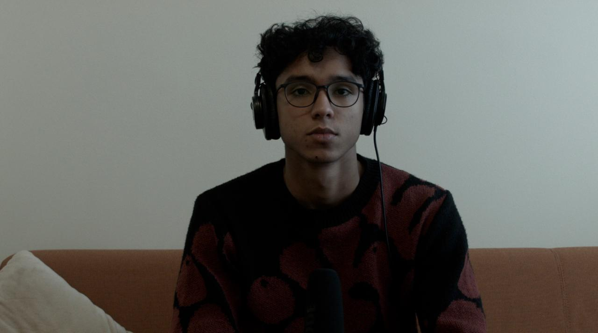
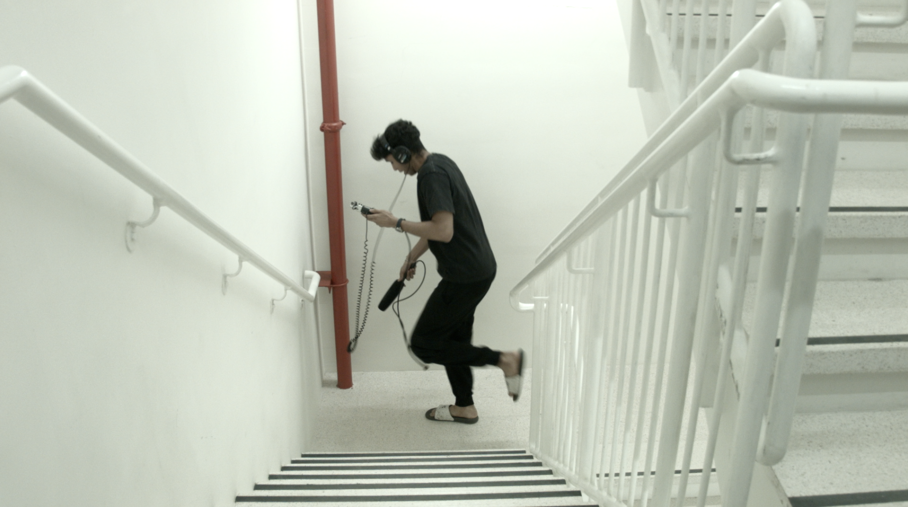

"Shushed" is a satirical mockumentary that pokes fun at the wild, cringe-worthy obsessions showcased in shows like My Strange Addiction. The film hilariously chronicles Sanchith (played by Sanchith Rao), a college student whose love for ASMR spirals into a full-blown obsession. From late-night chip crinkling to library whisper gate, Shushed dives into the absurd world of whispered chaos, leaving his friends and roommates teetering on the edge of sanity.
Directed and acted by Ian Chiu, Elizabeth Doan, Mariam Fatima, and Maryam Emaan Fiyaz, the film features a special appearance by Divya Aswani. It’s a collective effort, with all of us taking turns behind the camera, capturing the hilarity and chaos. Special thanks to Charlotte Hall and Divya Aswani for their invaluable assistance in bringing this quirky tale to life.
With its over-the-top satire and oddly relatable humor, Shushed takes you on a journey of obsession, laughter, and pure secondhand embarrassment. Whether you’re an ASMR enthusiast or just someone who enjoys a good laugh at someone else’s expense, this mockumentary will have you whispering, “I need more.”
So, grab your soup, find your quiet corner, and prepare to get "Shushed."